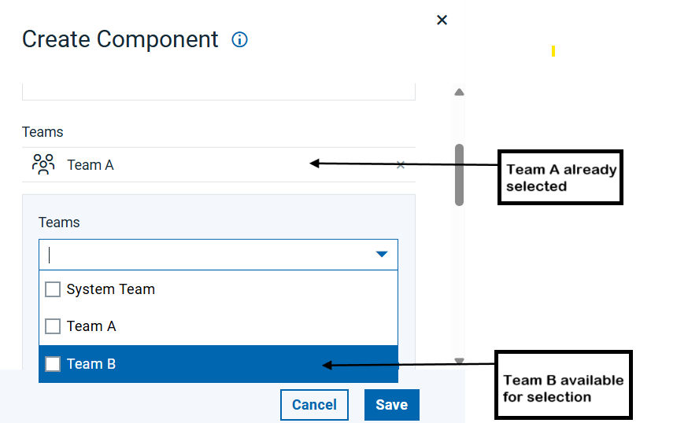

Assigning teams to objects
You can assign a team to an object (such as a component or an application) when you create the object.
About this task
You can assign teams to an object when you create an object in the associated Create item window or by using the Configuration page after the object is created.
You can also assign teams by mapping teams to objects by using the mapping security feature. See Mapping teams to objects.- By default, new objects are assigned to all teams that you are a member of. To specify which teams to assign new objects to, see Setting the teams for your account.
- Starting with 7.3.2, if a user belongs to multiple teams, the role permissions from the most restrictive team determines the user's overall access.
With the Create with Team Assignment permission enabled, you can add any additional team and type combinations to an object if you have the Create permission on at least one team-type mapping. With this permission, you can also add those team/type combinations in which you are not even a member.
For example, there are two teams: Team A and Team B. Team A is mapped with a standard component type. Team B is mapped with a standard component and component type 2. You are a member of Team A only and have the Create with Team Assignment permission enabled. As a member of Team A with Create with Team Assignment permission, when creating a component in IBM DevOps Deploy (Deploy), Team A is automatically selected. You can add Team B in the Add Teams field, even if you are not a member of Team B, provided both teams are mapped with standard component type. When editing a component, you cannot unmap Team A since you are a member, but you can select Team B as both teams share a standard component type and you are a member of one.

To assign teams to objects: